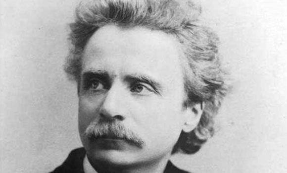

Edvard Grieg
Edvard Hagerup Grieg (15 June 1843 – 4 September 1907) was a Norwegian composer and pianist. He is widely considered one of the leading Romantic era composers, and his music is part of the standard classical repertoire worldwide. His use and development of Norwegian folk music in his own compositions brought the music of Norway to international consciousness, as well as helping to develop a national identity, much as Jean Sibelius did in Finland and Bedřich Smetana did in Bohemia. Grieg is the most celebrated person from the city of Bergen, with numerous statues depicting his image, and many cultural entities named after him: the city's largest concert building (Grieg Hall), its most advanced music school (Grieg Academy) and its professional choir (Edvard Grieg Kor). The Edvard Grieg Museum at Grieg's former home, Troldhaugen, is dedicated to his legacy.
Other works:
"Peer Gynt - Morning Mood"
"Solveig's Song"
"Peer Gynt - Death of Ase"
"March of the Trolls"